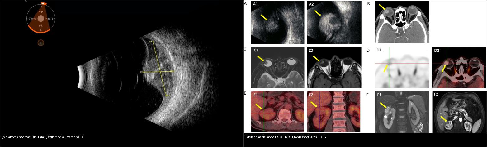
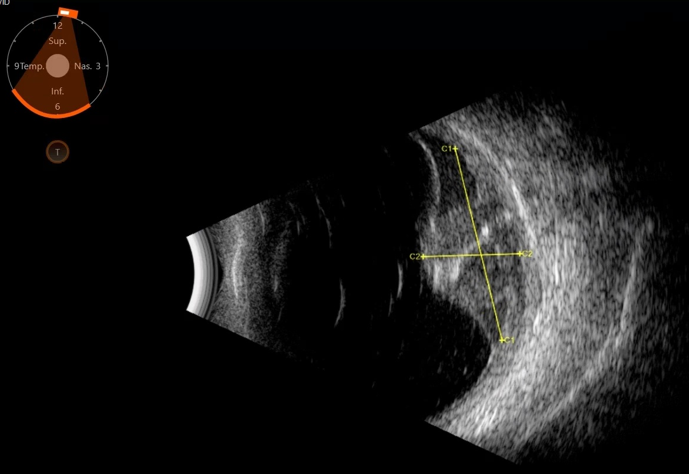
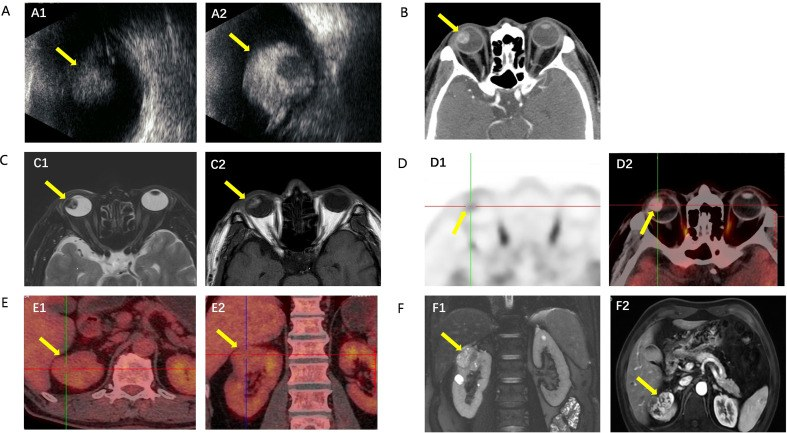

448 — U hắc mạc: melanoma vs nevus vs di căn — siêu âm A/B & MRI / Choroidal melanoma vs nevus vs metastasis
Tags: pattern:u-hac-mac vung:hac-mac protocol:US-MRI-hac-mac
Mức chắc chắn (certainty): tổng hợp y văn (literature synthesis) — nhóm tự biên từ ca mở Yu et al., Front Oncol 2026 (CC BY 4.0) + ảnh siêu âm melanoma CC0, chưa gắn ca nguyên văn đơn lẻ.
1. Tổng quan — melanin quyết định tín hiệu MRI + ngưỡng dày 2 mm
- Melanoma hắc mạc (choroidal melanoma) là u nội nhãn nguyên phát hay gặp nhất ở người lớn; khởi phát từ tế bào hắc tố hắc mạc. TẠI SAO MRI "sáng T1": melanin là chất thuận từ (paramagnetic) → rút ngắn T1 → tăng tín hiệu trên T1W, giảm trên T2W; u ngấm cản quang mạnh (giàu mạch).
- TẠI SAO siêu âm quan trọng: khối đặc hồi âm thấp–trung bình đều (tế bào chặt), hình vòm (dome); khi phá màng Bruch → hình nấm/cổ áo (mushroom/collar-stud); kèm lõm hắc mạc (choroidal excavation) + bóng lưu âm.
- Ngưỡng định lượng (Shields): dày ≥ 2 mm + dịch dưới võng mạc + sắc tố cam (orange pigment) + triệu chứng + lõm → nghi melanoma; nevus lành thường dày < 2 mm, dẹt, có drusen. U cao ≤ 3–4 mm cân nhắc TTT (quang đông xuyên đồng tử); trung bình → xạ bản mạch (I-125 plaque); lớn → cắt nhãn cầu.
- Số ca minh họa (Yu 2026): khối hắc mạc đường kính nền 12 mm, dày 8 mm, AJCC 8th pT2aN0M0; CT nốt tăng đậm độ ~9 mm ngấm trung bình; MRI ~1 cm, T1 tăng/T2 giảm/ngấm mạnh.
2. Gamut khối hắc mạc (đọc hình dạng + tín hiệu)
- Khối vòm/nấm hồi âm thấp–trung bình + melanin sáng T1 + dịch dưới VM: melanoma — xạ/mổ theo kích thước.
- Khối dẹt < 2 mm + drusen + không dịch, theo dõi ổn định: nevus hắc mạc — lành, theo dõi định kỳ (đừng xạ oan).
- Khối 2 bên/nhiều ổ + tiền sử K (vú/phổi) + tăng tín hiệu cả T1/T2: di căn hắc mạc — tìm ung thư nguyên phát, điều trị toàn thân.
- Khối tròn, thấu quang, "double circulation" trên OCT/A: hemangioma hắc mạc (u mạch lành) — theo dõi ± anti-VEGF nếu phù.
- Khối vôi hóa/canxi hóa dày đặc: osteoma hắc mạc — lành, theo dõi.
- Khối kèm bong võng mạc xuất tiết nhiều + viêm: loại viêm/lao/u khác — nối bài 447/446.
3. Bảng so sánh phân biệt (ma trận đối chiếu)
| Thực thể (entity) | Hình ảnh điển hình | Chốt vào (rule-in) | Chốt loại (rule-out) | Gợi ý xác nhận |
|---|---|---|---|---|
| Melanoma hắc mạc | Vòm/nấm + hồi âm thấp–TB + T1 sáng/T2 tối + ngấm mạnh | Dày ≥ 2 mm + sắc tố cam + dịch dưới VM | Dẹt < 2 mm ổn định → nevus | Siêu âm A/B + MRI + xạ/ mổ (có ca nền 12 mm, dày 8 mm) |
| Nevus hắc mạc | Dẹt < 2 mm + drusen + không dịch | Ổn định theo thời gian + drusen | Tăng dày/1 sắc tố cam → melanoma | Theo dõi đáy mắt ảnh màu định kỳ |
| Di căn hắc mạc | 2 bên/nhiều ổ + T1&T2 tăng + tiền sử K | Tiền sử ung thư + nhiều ổ 2 bên | 1 ổ đơn độc có melanin → melanoma | PET/CT tìm nguyên phát |
| Hemangioma hắc mạc | Tròn, thấu quang, "double circulation" | Thấu quang + không melanin (T1 không sáng rõ) | Có melanin/đặc → melanoma | OCT/ICGA + theo dõi |
| Osteoma hắc mạc | Canxi hóa dày đặc quanh đĩa | Mảng xương dày trên CT | Không vôi hóa → khác | FAF/CT theo dõi |

Trái: khối melanoma hắc mạc trên siêu âm B (đo trục C). Phải: đa phương thức — (A) siêu âm B, (B) CT ngấm, (C) MRI T2/T1c, (D) PET; (E/F) khối đồng thời ở thận. Nguồn: trái Jmarchn, CC0 via Wikimedia; phải Yu et al., Front Oncol 2026 Fig. 1, CC BY 4.0. Ảnh ghép letterbox.Quiz composite: che 2 nhãn, hỏi dấu nào trên MRI khẳng định bản chất melanoma?
Bấm để hiện đáp án
- Trái = melanoma hắc mạc (siêu âm B) — khối hồi âm thấp–trung bình, đo được trục C1–C2.
- Phải = đa phương thức 1 ca melanoma (A US, B CT, C MRI T2/T1c, D PET).
- Chốt MRI: T1W TĂNG tín hiệu + T2W giảm + ngấm mạnh — do melanin thuận từ (khác di căn/hemangioma). Ca này kèm u thận đồng thời (E/F).
Vì sao hình "nấm/cổ áo" chỉ melanoma (và phân biệt với di căn)
- Dấu cổ áo (collar-stud/mushroom): u phá màng Bruch rồi loe rộng trong khoang dưới võng mạc → thắt eo ở màng Bruch — gợi ý melanoma (di căn ít khi tạo hình này, thường dẹt/nhiều ổ).
- Melanin = T1 sáng: di căn (vú/phổi) thường không sáng T1 rõ; hemangioma thấu quang; osteoma vôi hóa.
- Cạm bẫy: u không sắc tố (amelanotic) mất lợi thế "T1 sáng" — khi đó dựa siêu âm + mô bệnh; đừng loại melanoma chỉ vì T1 không sáng.
- Cạm bẫy: máu dưới võng mạc/melanin trong xuất huyết cũng sáng T1 — đọc cùng bối cảnh.
4. Protocol chụp + điều trị
- Siêu âm mắt A + B (đầu tay): B-mode đo chiều cao (mm) + hình vòm/nấm + lõm hắc mạc; A-mode đánh giá hồi âm nội bộ + dao động mạch; đo lại theo thời gian (tăng dày = nghi ác).
- MRI hốc mắt có tiêm: T1W fat-sat trước + sau tiêm (melanin sáng + ngấm) + T2W (giảm); là chìa khóa phân biệt melanoma vs di căn/hemangioma.
- CT hốc mắt: khi nghi vôi hóa (osteoma) hoặc cần đánh giá xương; ít đặc hiệu cho melanoma (chỉ thấy nốt tăng đậm độ ngấm).
- Sinh thiết: chỉ khi ảnh không đặc hiệu và cần chẩn đoán mô học (nguy cơ gieo mầm — cân nhắc).
- Điều trị theo kích thước: TTT (≤ 3–4 mm) · xạ bản mạch I-125/proton (trung bình) · cắt nhãn cầu (lớn/biến chứng); theo dõi di căn gan định kỳ suốt đời (gan là nơi di căn chính), xét di truyền BAP1 khi phù hợp.
flowchart TD
A[Khoi hac mac] --> B{Day >= 2 mm + sac to cam + dich duoi VM?}
B -->|Khong, det on dinh| C[Nevus: theo doi day mat dinh ky]
B -->|Co| D{MRI: T1 sang + T2 toi + ngam?}
D -->|Co, 1 o melanin| E[Melanoma hac mac]
D -->|2 ben nhieu o + tien su K| F[Di can: PET/CT tim nguyen phat]
E --> G{Kich thuoc}
G -->|<=3-4 mm| H[TTT]
G -->|Trung binh| I[Xa ban mach I-125/proton]
G -->|Lon| J[Cat nhan cau]
E --> K[Theo doi gan suot doi + xet BAP1 neu phu hop]
5. Biến thể bình thường và cạm bẫy
- Nevus hắc mạc dày giả do drusen/khối lành: theo dõi bằng ảnh màu + siêu âm đo dày — chỉ chuyển xử trí khi tăng dày/1 sắc tố cam/dịch mới.
- Melanoma không sắc tố (amelanotic) mất "T1 sáng" — có thể bị đọc nhầm di căn/viêm; dựa siêu âm + mô bệnh.
- Máu/melanin trong xuất huyết dưới võng mạc cũng sáng T1 — đọc cùng hình thái và bối cảnh.
- Di căn hắc mạc 2 bên dễ bị chẩn đoán melanoma nguyên phát — luôn hỏi tiền sử ung thư + tìm ổ thứ phát.
- Theo dõi di căn: melanoma hắc mạc di căn muộn (nhiều năm) — theo dõi gan dài hạn kể cả sau điều trị thành công mắt (di căn không phụ thuộc u mắt còn hay hết).
- Sinh thiết/u chọc tùy tiện có nguy cơ gieo tế bào — chỉ khi cần mô học và có chỉ định rõ.
6. Tự lượng giá — Blind Quiz
Ca 1 — Siêu âm B này: khối vòm hồi âm thấp–trung bình. Nghĩ gì? Đo gì?

- Hỏi: hình dạng khối? Hồi âm nội bộ ra sao? Cần đo thêm gì để phân độ nguy cơ?
Bấm để hiện đáp án (findings + chẩn đoán)
- Dấu hiệu (findings): khối vòm trong nhãn cầu, hồi âm thấp–trung bình đều, bờ rõ.
- Chẩn đoán (diagnosis): nghi melanoma hắc mạc — vì khối đặc hồi âm thấp–trung bình (tế bào chặt).
- Đo thêm: chiều cao (mm) — ngưỡng ≥ 2 mm nghi melanoma; tìm lõm hắc mạc + dịch dưới võng mạc; MRI phân biệt bản chất.
- Nguồn ảnh: Jmarchn, CC0 via Wikimedia Commons.
Ca 2 — Đa phương thức US-CT-MRI-PET của khối hắc mạc. Dấu MRI nào chốt melanoma?

- Hỏi: (C1/C2) T1/T2 khác nhau thế nào? Vì sao? Ca này còn phát hiện gì?
Bấm để hiện đáp án (findings + chẩn đoán)
- Dấu hiệu (findings): (A) siêu âm B khối hồi âm thấp–TB; (B) CT nốt tăng đậm độ ngấm; (C1) T2 giảm; (C2) T1 sau tiêm ngấm mạnh (và T1 trước tiêm sáng); (D) PET dương.
- Chẩn đoán (diagnosis): melanoma hắc mạc (nền 12 mm, dày 8 mm, AJCC T2a) — chốt MRI melanin: T1 sáng + T2 tối + ngấm mạnh.
- Phát hiện thêm: PET/CT (E) + MRI (F) khối đồng thời ở thận — u nguyên phát thứ hai (chẩn đoán sau mổ: ccRCC).
- Nguồn ảnh: Yu et al., Front Oncol 2026 Fig. 1 (PMC13472860), CC BY 4.0.
Ca 3 — Hai khối hắc mạc: bên nào theo dõi, bên nào cần điều trị?
Bấm để hiện đáp án (findings + chẩn đoán)
- Trái (siêu âm melanoma): khối vòm hồi âm thấp–TB đặc → cần đo + điều trị theo kích thước.
- Phải (đa phương thức): melanoma xác nhận bằng MRI/PET → xạ/mổ.
- Chốt: dày ≥ 2 mm + sắc tố cam + dịch dưới VM → điều trị; dẹt < 2 mm có drusen, ổn định → theo dõi (nevus).
- Nguồn ảnh: Jmarchn CC0 (trái) + Yu et al., Front Oncol 2026 Fig. 1 CC BY 4.0 (phải).
Bài liên quan chéo
- 400 – Tổng quan Mắt
- 412 – U trong nhãn cầu (retinoblastoma/Coats nhi — DDx u vôi hóa)
- 411 – Siêu âm nhãn cầu (B-scan — bong võng mạc/máu dịch kính)
- 447 – Hội chứng đốm trắng (viêm màng mạch gây bong xuất tiết)
- 460 – Can thiệp mắt + xạ trị (xạ bản mạch/hạt xạ)
Ảnh
448_melanoma_US_B_mode_1_Wikimedia-Jmarchn-CC0.png,448_melanoma_US_B_mode_2_Wikimedia-Jmarchn-CC0.png— Jmarchn, CC0 (public domain) via Wikimedia Commons.448_melanoma-da-mode_US-CT-MRI_PMC13472860-Fig1-CCBY.jpg,composite_melanoma-US-vs-damode.jpg— Yu et al., Front Oncol 2026 (PMCID: PMC13472860), CC BY 4.0.- Chi tiết giấy phép từng ảnh trong
images/CREDITS.md. AuntMinnie: chỉ dẫn link, không tải.
Không dùng để chẩn đoán độc lập khi chưa có người hướng dẫn.